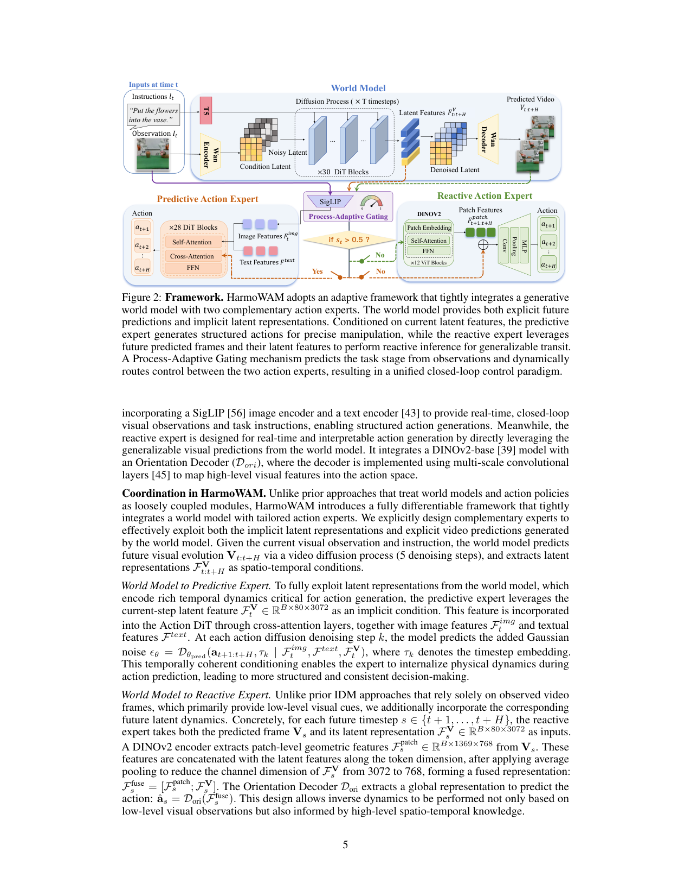
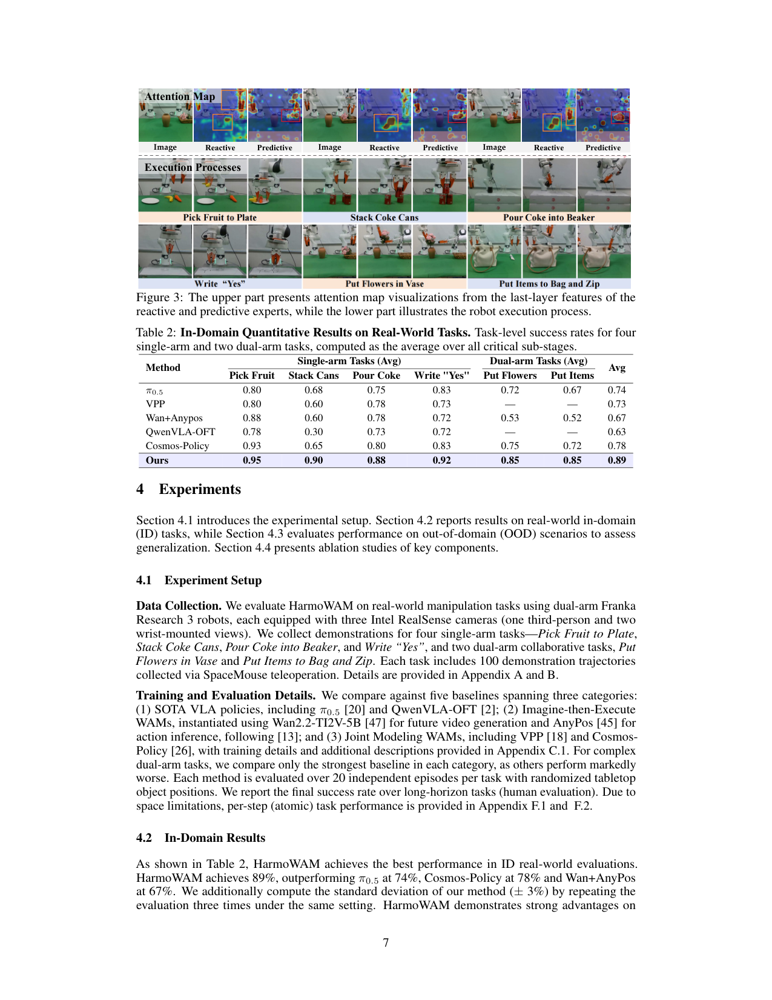
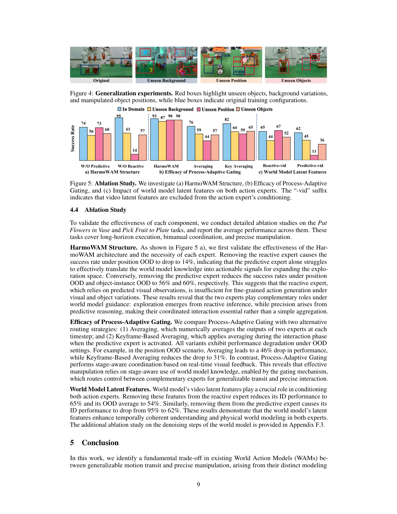
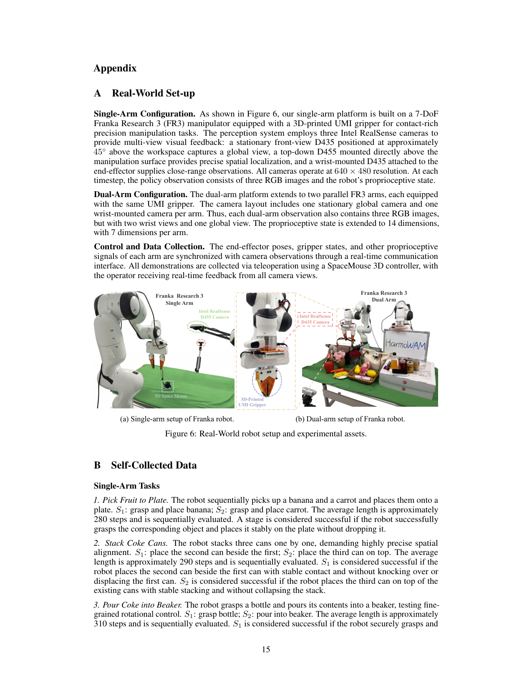
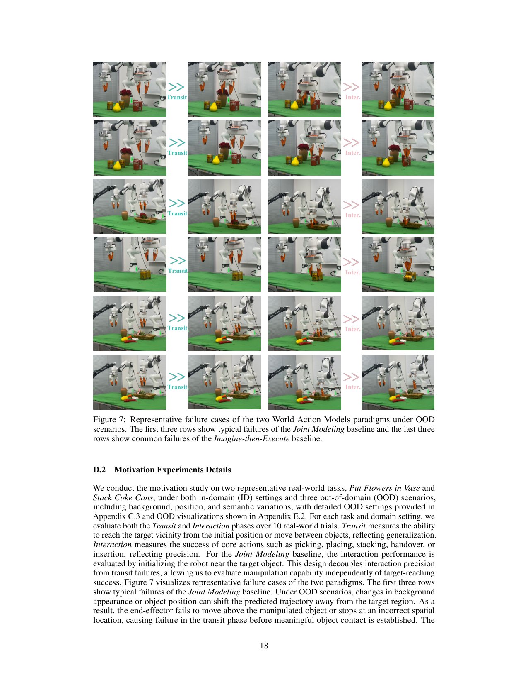
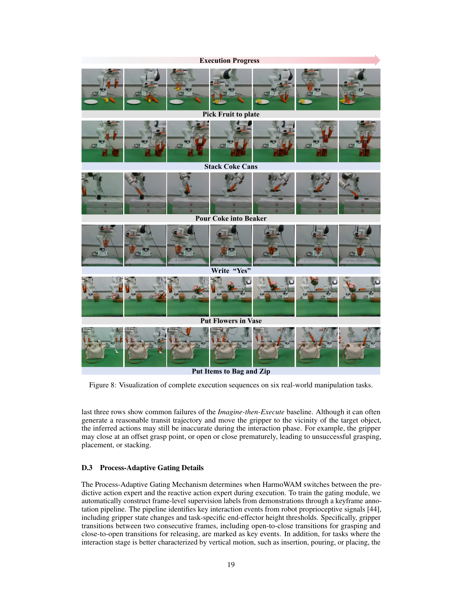
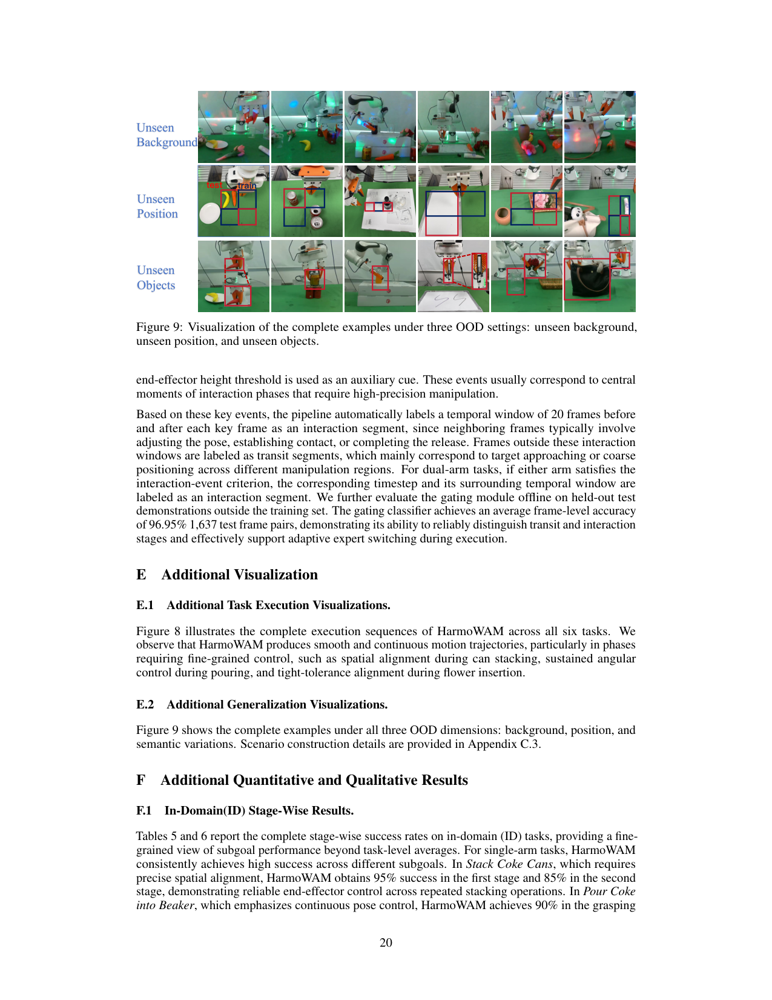
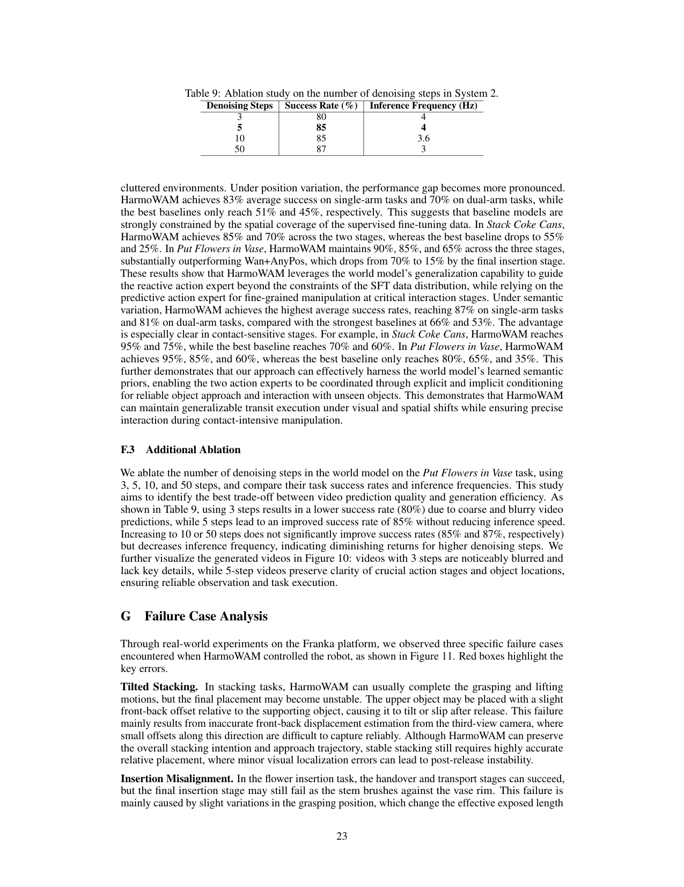
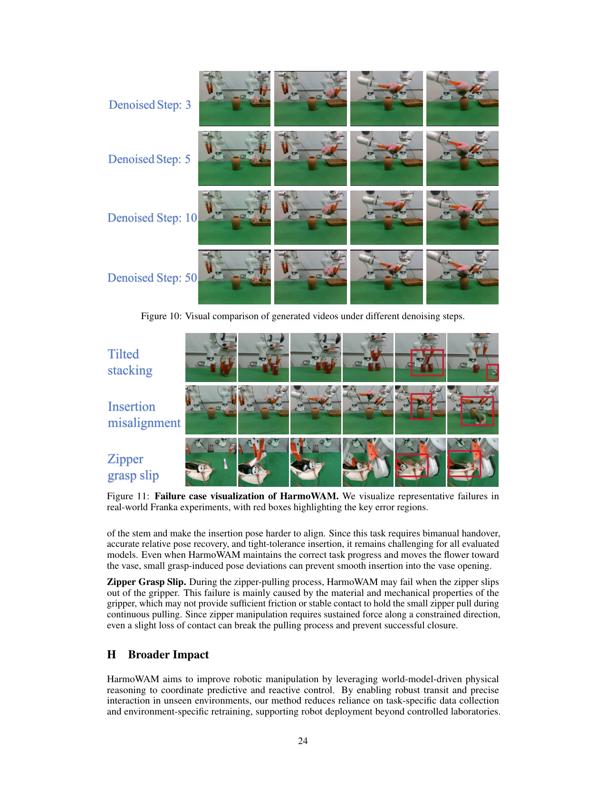

把 WAM 的两条旧路线(Imagine-then-Execute 泛化好但不准 / Joint Modeling 准但 OOD 探索崩)用一个共享世界模型 + 两个互补 action expert + 一个过程自适应门控统一进来,transit 用 reactive expert 借世界模型泛化、interaction 用 predictive expert 借隐含 latent 精准对齐,实现泛化和精度同时拿住。
问题
要解决什么：现有 WAM 分两条路:Imagine-then-Execute 先生成未来视频再用 inverse dynamics(IDM)反推动作,transit(物体间移动)泛化强但 interaction(精细操作)精度差;Joint Modeling 直接联合建模 video+action,interaction 精度高但 transit 在 OOD 下探索空间被 SFT 数据分布锁死,到不了目标。作者要解决的是:怎么在一个端到端 WAM 里同时拿到泛化的 transit 和精准的 interaction,而不是二选一。
为什么 prior work 不够：作者用系统性 motivation 实验(Table 1)证明两条路是结构性 trade-off 而非工程问题:Imagine-then-Execute 的 IDM 只从像素反推动作,缺接触级精度(OOD interaction 平均掉到 55%);Joint Modeling 把 action 绑死在 SFT 分布上,OOD transit 掉到 32%,即使把机器人初始化到目标附近 interaction 还能 95%,说明瓶颈是探索不是精度。两条路各自最优解都在对方最弱处失效,简单 ensemble(平均)也不行——需要阶段感知的动态路由。
输入 / 输出
输入
| 名称 | 类型 | 说明 |
|---|---|---|
| visual observation | image | 当前帧 RGB,3 视角(单臂:1 第三人称 + 2 腕部;双臂:1 全局 + 2 腕部),RealSense 640×480。世界模型用其中一路生成 13 帧未来视频 |
| language instruction | text | 任务指令(如 'Put the flowers into the vase'),经冻结 T5 text encoder 编码 |
| proprioceptive state | vector | 机器人本体状态;单臂 7-DoF、双臂 14-DoF(每臂 7 维:3 位置位移 + 3 Euler 角 + 1 夹爪) |
输出
| 名称 | 类型 | 说明 |
|---|---|---|
| predicted video V_{t:t+H} | video | 13 帧未来视频,分辨率 256×320,经世界模型 5 步去噪生成,作为 reactive expert 的显式输入和两个 expert 的隐式 latent 来源 |
| action chunk | continuous | H=12 步连续动作;单臂 R^7 / 双臂 R^14(相对末端位姿位移 + Euler 角 + 二值夹爪);48Hz 生成 |
控制频率：action 生成 48Hz,chunk size H=12;世界模型视频去噪 5 步;整条管线在 8×H20 GPU 训练
输入拼接 protocol
<bos_ctx>[I_t (3-view RGB)]<eos_ctx><bos_lang>T5(l_t)<eos_lang><bos_wm>NoisyLatent x_ξ (256×320×C, 13 帧)<eos_wm><bos_cond>F_V_t ∈ R^{B×80×3072} (世界模型当前步隐含 latent)<eos_cond><bos_gate>F_img_t (SigLIP patch) → s_t ∈[0,1]<eos_gate><bos_chunk>[Predictive: noisy a_{t+1:t+12} 经 28-block DiT cross-attn(条件 F_img_t, F_text, F_V_t)] OR [Reactive: [DINOv2(V_s) patch; pool(F_V_s)]→ OrientationDecoder → â_s, s∈{t+1..t+H}]<eos_chunk>
逐 token 解释:三个坑:(1) language 是 cross-attention 不是序列拼接;(2) 多视角按模块分工(世界模型一路、expert 另一路)不在序列层处理;(3) 训练和推理 context 一致(都喂当前观测 + 未来视频),但训练时未来视频用 GT 去 teacher-force 世界模型、推理用世界模型自己生成的;门控训练用 keyframe pipeline 自动标的 y∈{0,1} 监督。
数据集
| 数据 | 规模 | 备注 |
|---|---|---|
| 自采真实示教(主) | 6 任务 × 100 轨迹 | Franka FR3 + UMI gripper;4 单臂(Pick Fruit / Stack Cans / Pour Coke / Write 'Yes')+ 2 双臂(Put Flowers in Vase / Put Items to Bag and Zip);SpaceMouse 遥操,平均 280-400 步/轨迹,多 stage 顺序评测 |
| DROID | 201,119 轨迹 | 公开 Franka Panda 数据,用于世界模型预训练 |
| AgiBot | 3,017 轨迹 | AgiBot G1,用于世界模型预训练 |
| RoboMIND | 1,721,985 轨迹 | Franka/UR/Ark/Agilex/TienKung 多本体,用于世界模型预训练 |
| 世界模型预训练总计 | ~1.9M 轨迹 | 上述公开数据 + 闭源机器人数据,给 Wan2.2-TI2V-5B 注入机器人物理先验 |
架构（摘要）
主干与结构
backbone：Wan2.2-TI2V-5B(text+image to video diffusion,5B,MoE)+ 自研 Action DiT(1B)+ SigLIP + DINOv2-base + T5 + 轻量门控 MLP
参数：世界模型 5B(stage1 全参 finetune 后 stage2 冻结);Predictive expert DiT 1B(28 blocks);Reactive expert = DINOv2-base + OrientationDecoder(多尺度卷积);Gate = 轻量 MLP;T5/SigLIP/DINOv2 各自冻结
类型：Hybrid WAM:共享世界模型(diffusion)+ 双 expert(diffusion expert + IDM-style reactive expert)+ 过程自适应门控(MLP 路由)
关键组件
- World Model(Wan2.2-TI2V-5B):5 步去噪生成 13 帧 256×320 未来视频 + 隐含 latent F_V∈R^{B×80×3072};stage1 flow matching 全参 finetune,stage2 冻结
- Predictive Action Expert(1B DiT,28 blocks):把当前隐含 latent F_V_t 经 cross-attention 注入,diffusion 去噪生成 H=12 步动作;负责 interaction 精准
- Reactive Action Expert(DINOv2-base + OrientationDecoder):对每帧未来视频 V_s 提 patch 几何特征,与池化后的 F_V_s 在 token 维 concat,经多尺度卷积 decoder 出动作;负责 transit 泛化(从世界模型预测的未来反推 IDM)
- Process-Adaptive Gating(MLP):用 SigLIP patch 特征出 s_t∈[0,1],>0.5 走 predictive,否则走 reactive;keyframe pipeline 自动标 y(夹爪状态变化 / 末端高度阈值 ±20 帧窗口)
- 双 expert 互补来源:predictive 吃隐含 latent(时序物理先验)、reactive 吃显式未来视频(泛化视觉先验);两者都来自同一个世界模型,不是两个独立模型
为什么这样设计
动机实验(Table 1)证明两条旧 WAM 路线是结构性 trade-off:Imagine-then-Execute 的 IDM 只看像素缺精度,Joint Modeling 把 action 绑死在 SFT 分布上 OOD 到不了目标。HarmoWAM 的解法不是折中而是分工——让世界模型同时提供显式未来视频(给 reactive 做泛化 transit)和隐含 latent(给 predictive 做精准 interaction),再用门控按任务阶段(transit vs interaction)硬路由。这样 reactive 借世界模型的泛化能力跳出 SFT 分布,predictive 借隐含 latent 拿到时序相干的精细控制。双 expert 都从同一个世界模型取条件,保证物理先验共享,不变成两个割裂的模型。
数值 sense
| 项 | 值 |
|---|---|
| dit_worldmodel | Wan2.2-TI2V-5B,5B 参数(MoE);Wan2.2-VAE 压缩比 16×16×4(空间 16×、时间 4×);hidden 3072 |
| dit_predictive | 1B 参数,28 Transformer blocks,diffusion 去噪 |
| 分辨率 | 世界模型 256×320(VAE 压到 16×20 latent);摄像头原始 640×480 |
| VAE | Wan2.2-VAE:空间 16× 下采样(256×320→16×20),时间 4× 下采样,latent 通道 16 |
| 每帧 latent 维 | 16×20×16 ≈ 5120 维/latent 帧;经 patch(2×2)→ 80 token × 3072 维(论文显式给 R^{B×80×3072}) |
| Chunk | 世界模型预测 13 帧未来视频;action chunk H=12 步;视频去噪 5 步(3步80%→5步85%,50步87% 边际递减,Table 9) |
| 上下文 | 当前观测 1 帧 + 13 帧未来视频;无长历史上下文(不像 DreamZero 的 6.6s KV-cache),靠世界模型的预测 horizon 提供'前瞻' |
| 动作 | 连续相对位姿:单臂 7-DoF(3 位移 + 3 Euler + 1 夹爪),双臂 14-DoF;H=12 步/chunk,生成频率 48Hz |
| 训练 | 8×H20 GPU;两阶段:stage1 世界模型全参 flow matching finetune(~1.9M 轨迹预训练 + 自采 finetune),stage2 冻结世界模型、训 predictive(diffusion loss)+ reactive(Smooth L1, β=0.1)+ gate(BCE);λ_react=0.1, λ_gate=0.05;门控离线准确率 96.95% |
→ 详见 Architecture tab。
关键结果
| 指标 | 值 | 最强 baseline | setup |
|---|---|---|---|
| ID 平均成功率(6 任务) | 89% | 78% (Cosmos-Policy) / 74% (π0.5) / 67% (Wan+AnyPos) | 4 单臂 + 2 双臂 Franka FR3,每任务 20 episodes |
| OOD 平均成功率(3 档 × 6 任务) | 82% | 53% (Wan+AnyPos) / 49% (π0.5) / 44% (Cosmos-Policy) | unseen background/position/objects |
| OOD 相对最强 baseline 提升 | +33% vs 最强 VLA / +29% vs 最强 WAM | — | 论文 abstract 声称的 OOD 平均优势 |
| ID 单臂 stage-wise 平均 | 91% | 81% (Cosmos-Policy) | 4 单臂任务 stage-wise |
| ID 双臂 stage-wise 平均 | 85% | 73% (Cosmos-Policy) | 2 双臂任务 stage-wise |
| Unseen Position OOD 平均(最难档) | 80% | 32% (π0.5) / 26% (Cosmos-Policy) | 空间不相交区域 |
| Action 生成频率 | 48 Hz(H=12 chunk) | — | 世界模型 5 步去噪 |
| 门控分类准确率 | 96.95% | — | 1637 测试帧对,offline 评测 |
| 去噪步数消融(5步 vs 50步) | 85% @5步 / 87% @50步 | 80% @3步 | Put Flowers in Vase,频率 5步4Hz / 50步3Hz |
Insights
- WAM 的两条旧路线不是工程优劣而是结构性 trade-off(Table 1):Imagine-then-Execute 死于 IDM 精度(只看像素),Joint Modeling 死于 SFT 分布锁死探索。统一需要分工不是折中——让世界模型的隐含 latent 管精度、显式未来管泛化(p4-p5)。
- 门控必须阶段感知硬路由,不能平均:Figure 5b 证明 Averaging 在 position OOD 掉 46%,因为两个 expert 在错误阶段发力会互相干扰;门控让 reactive 只在 transit 发力、predictive 只在 interaction 发力,各自在擅长的阶段不被对方稀释(p9)。
- 世界模型的隐含 latent 比显式视频更关键:Figure 5c 去掉 latent,predictive ID 从 95% 掉到 62%(掉 33 个点),reactive 掉到 65%。说明时序相干的隐含表征才是精细操作的核心,显式视频更多服务于泛化导航(p9)。
- OOD 的瓶颈是 transit 不是 interaction:Table 1 Joint Modeling 在 OOD transit 掉到 32%,但 interaction(初始化到目标附近)能 95%。这解释了为什么 HarmoWAM 用 reactive expert(借世界模型泛化)专门补 transit——它精准命中了失败根因(p4)。
- 5 步去噪是 quality-speed 甜点(Table 9):3步80%→5步85%→10步85%→50步87%,边际递减明显。这说明世界模型的视频质量只要'够用'(关键动作阶段和物体位置清晰)就行,不必追求高保真——给后续 WAM 工程化一个重要参考(p23)。
vs 同类工作
- vs DreamZero(单 expert joint WAM):DreamZero 用单一 AR DiT 联合出 video+action,靠 video-action 对齐拿精度;HarmoWAM 拆成双 expert + 门控,承认单一 expert 难同时拿泛化和精度。DreamZero 强在长上下文闭环 KV-cache(6.6s),HarmoWAM 强在阶段感知分工——两个解决 WAM 不同维度的方案。
- vs Cosmos-Policy(joint latent WAM):Cosmos 把 action 编码成 latent 帧和视频一起去噪,HarmoWAM motivation 实验证明这类 Joint Modeling OOD transit 掉到 26%。HarmoWAM 用 reactive expert 借世界模型显式预测跳出 SFT 分布,是针对 Cosmos 弱点的直接补丁。
- vs Wan+AnyPos(imagine-then-execute):用 Wan2.2 生成视频 + AnyPos 做 IDM,HarmoWAM motivation 证明它 interaction OOD 掉到 55%。HarmoWAM 的 predictive expert 借隐含 latent 而非纯像素,拿到时序相干的精度——是 IDM 路线的精度增强版。
- vs VPP(video feature condition policy):VPP 用视频 diffusion 的中间特征条件化一个 diffusion policy head,本质是单 expert 的 Joint Modeling 变体。HarmoWAM 多了门控和 reactive expert,在双臂任务上 VPP 不可比(论文未报),单臂 HarmoWAM 89% vs VPP 73%。
局限
- 论文自承:世界模型固定生成 horizon(13 帧),下游任务必须保同样的未来视频 horizon 才能对齐其学到的时空动态,限制了适应不同时间尺度任务的灵活性(p25 Appendix I)。
- 论文自承:pixel 级未来生成带来不必要的生成开销,未来要探索 latent 级预测表征做更高效的下游 action 生成(p25 Appendix I)。
- 论文自承:三类失败(Tilted stacking / Insertion misalignment / Zipper grasp slip)都是精度/硬件极限,第三人称视角对前后位移小偏移不敏感、UMI gripper 摩擦力不足(p23-p24 Figure 11)。
- 我们读出:门控是硬二选一(s_t>0.5),没有混合/平滑过渡,在阶段边界附近可能抖动切换;论文未给门控在边界帧的稳定性分析。
- 我们读出:世界模型只用一路视角生成视频,其它视角喂 expert——多视角融合在特征层而非世界模型层,可能丢失部分空间信息;论文未做'世界模型用多视角'的对照。
- 我们读出:所有 baseline 都在同一自采数据上 finetune,但 Wan+AnyPos 的 AnyPos 是 from scratch 训的(其它用预训练 checkpoint),baseline 之间预训练基础不完全对齐,公平性有细微偏差(p16)。
- 我们读出:96.95% 门控准确率是离线评测,实际闭环时门控基于实时观测,若观测因 OOD 退化门控可能误判阶段——论文未给门控在 OOD 下的准确率。
可复现性
- code：https://elbb-yu.github.io/HarmoWAM/(project page)
- weights：未明确开源权重(仅 project page)
- hardware：Franka FR3 单/双臂 + UMI gripper + 3× Intel RealSense(D435/D455)
- training：8× NVIDIA H20 GPU
- real_eval：6 真实任务 × 20 episodes/任务,3 档 OOD
HarmoWAM 架构详解
> 配套 card.json。先用 Mermaid 把数据流和门控路由画清,再用文字把每个组件讲透。所有数字来自论文(页码标注)。
1. 总体数据流(世界模型 → 双 expert → 门控路由)
flowchart LR
subgraph Inputs
I["观测 I_t<br/>(3-view RGB)"]
L["语言 l_t"]
end
subgraph WorldModel["World Model (Wan2.2-TI2V-5B, 冻结)"]
Enc["Wan Encoder"]
DiT30["30 DiT blocks<br/>flow matching ×5 步"]
Dec["Wan Decoder"]
WMOut["13帧未来视频 V_{t:t+H}<br/>+ 隐含 latent F_V ∈ R^{B×80×3072}"]
Enc --> DiT30 --> Dec --> WMOut
end
subgraph Predictive["Predictive Action Expert (1B DiT, 28 blocks)"]
PDiT["self-attn + cross-attn<br/>条件: F_img_t (SigLIP), F_text (T5), F_V_t"]
PDout["diffusion 去噪<br/>→ a_{t+1:t+12} (H=12)"]
PDiT --> PDout
end
subgraph Reactive["Reactive Action Expert (DINOv2-base + Decoder)"]
DINO["DINOv2 ×12 ViT<br/>→ patch F_patch ∈ R^{B×1369×768}"]
Pool["pool F_V_s 3072→768"]
Concat["concat token 维<br/>F_fuse = [F_patch; F_V_s]"]
Dori["Orientation Decoder<br/>多尺度卷积"]
RDout["→ â_s, s∈{t+1..t+H}"]
DINO --> Concat
Pool --> Concat
Concat --> Dori --> RDout
end
subgraph Gate["Process-Adaptive Gating (MLP)"]
Sig["SigLIP patch F_img_t"]
MLP["轻量 MLP → s_t ∈[0,1]"]
Sig --> MLP
end
I --> Enc
L --> Enc
I --> Sig
WMOut -- "隐含 latent F_V_t" --> PDiT
WMOut -- "显式视频 V_{t+1..t+H}" --> DINO
WMOut -- "latent F_V_s" --> Pool
L -- "F_text" --> PDiT
MLP -- "s_t>0.5: interaction" --> PDout
MLP -- "s_t≤0.5: transit" --> RDout
PDout --> Action["action chunk"]
RDout --> Action关键点:双 expert 不并行跑,由门控二选一。Predictive 吃隐含 latent(diffusion 精准),Reactive 吃显式未来视频(IDM 泛化)。两者共享同一世界模型条件,物理先验不割裂(p5 Figure 2)。
2. 输入/输出契约
| 方向 | 名称 | 类型 | 说明 |
|---|---|---|---|
| 输入 | 视觉观测 | image | 3 视角 RGB,RealSense 640×480;世界模型用其中一路 |
| 输入 | 语言指令 | text | T5 编码,cross-attn 注入 |
| 输入 | 本体感受 | vector | 单臂 7-DoF / 双臂 14-DoF |
| 输出 | 未来视频 | video | 13 帧 256×320,5 步去噪 |
| 输出 | 动作 chunk | continuous | H=12 步,单臂 R^7 / 双臂 R^14,48Hz |
数值 sense:模型到底多大
| 项 | 值 | 出处 |
|---|---|---|
| DiT 世界模型 | Wan2.2-TI2V-5B,5B(MoE);hidden 3072 | Wan2.2 HF model card |
| DiT predictive | 1B,28 Transformer blocks,diffusion | 论文 p5 |
| 分辨率 | 世界模型 256×320(VAE→16×20);摄像头 640×480 | 论文 p4, p15 |
| VAE | Wan2.2-VAE:空间 16×、时间 4×、latent channel 16 | Wan2.2 HF(压缩比 16×16×4) |
| 每帧 latent 维 | 16×20×16≈5120;patch(2×2)→80 token×3072 | 论文显式 R^{B×80×3072}(p5) |
| Chunk | 13 帧未来视频;action H=12;去噪 5 步 | 论文 p4-5, p23 Table 9 |
| 上下文 | 当前 1 帧+13 帧未来;无长历史 | 论文设计 |
| 动作 | 连续相对位姿;单臂 7-DoF/双臂 14-DoF;H=12,48Hz | 论文 p3, p4 |
| 训练 | 8×H20;两阶段;λ_react=0.1, λ_gate=0.05;门控 96.95% | 论文 p16-17, p19 |
3. 为什么是双 expert 而不是单 expert
这是 HarmoWAM 最核心的设计选择,由 motivation 实验(Table 1)驱动(p4):
Imagine-then-Execute 的 IDM 路线:transit 在 OOD 几乎满分(10/10),但 interaction 掉到 55%——因为 IDM 只从像素反推动作,缺接触级精度,夹爪偏移、提前开合。
Joint Modeling 路线:ID interaction 能 90%+,但 OOD transit 掉到 32%——action 被 SFT 分布锁死,即使初始化到目标附近 interaction 还能 95%,说明瓶颈是探索不是精度。
HarmoWAM 的解法:不折中,分工。让世界模型的隐含 latent(时序物理先验)喂 predictive expert 做 interaction,显式未来视频(泛化视觉先验)喂 reactive expert 做 transit。Figure 3 attention map 给机理证据:predictive attend 物体(接触级),reactive attend 夹爪+周围(空间级)。Figure 5c 消融:去掉 latent,predictive ID 从 95% 掉到 62%,证明隐含 latent 是精度的关键。
4. Process-Adaptive Gating:阶段感知硬路由
sequenceDiagram
participant Obs as 当前观测 I_t
participant Gate as 门控 MLP
participant WM as 世界模型
participant Pred as Predictive Expert
participant React as Reactive Expert
participant Robot as 机器人
loop 每个控制步
Obs->>Gate: SigLIP patch F_img_t
Gate->>Gate: MLP → s_t ∈[0,1]
alt s_t > 0.5 (interaction 阶段)
Gate->>WM: 取隐含 latent F_V_t
WM->>Pred: F_V_t (cross-attn) + F_img + F_text
Pred->>Pred: 28 DiT diffusion 去噪
Pred->>Robot: a_{t+1:t+12} (精准 interaction)
else s_t ≤ 0.5 (transit 阶段)
Gate->>WM: 取显式未来视频 V_{t+1..t+H}
WM->>React: V_s + latent F_V_s
React->>React: DINOv2 patch + concat + OrientationDecoder
React->>Robot: â_s (泛化 transit)
end
Robot->>Obs: 执行后新观测
end门控训练监督(p6, p19 Appendix D.3):用 keyframe pipeline 自动标 y。夹爪状态变化(open↔close,grasping/releasing)或任务相关末端高度阈值(insertion/pouring/placing)作为 key event;前后各 20 帧窗口标 y=1(interaction),其余 y=0(transit);双臂任一满足即标 interaction。BCE loss,λ_gate=0.05。离线准确率 96.95%(1637 测试帧对)。
为什么硬路由 > 平均(Figure 5b):Averaging 在 position OOD 掉 46%,Keyframe-Averaging 掉 31%,门控几乎不掉。两个 expert 在错误阶段发力会互相干扰——transit 阶段让 predictive 发力会过度精细导致到不了目标,interaction 阶段让 reactive 发力会精度不足。门控让各自在最擅长阶段不被对方稀释。
5. 两阶段训练流程
flowchart TD
subgraph Stage1["Stage 1: World Model Finetuning"]
WP["Wan2.2-TI2V-5B<br/>(已在~1.9M轨迹预训练)"]
WF["全参 flow matching finetune<br/>x_ξ = (1-ξ)x_0 + ξ·x_1<br/>v_ξ = x_1 - x_0<br/>L = E[w(ξ)·‖f_θ(x_ξ,ξ,c) - v_ξ‖²]"]
WFr["任务特定世界模型"]
WP --> WF --> WFr
end
subgraph Stage2["Stage 2: Expert + Gate Finetuning (世界模型冻结)"]
Freeze["冻结世界模型"]
L1["L_pred: diffusion denoising loss<br/>(predictive expert)"]
L2["L_react: Smooth L1 (β=0.1)<br/>(reactive expert)"]
L3["L_gate: BCE<br/>(门控)"]
Total["L_stage2 = L_pred + 0.1·L_react + 0.05·L_gate"]
Freeze --> L1 & L2 & L3 --> Total
end
Stage1 --> Stage2Stage1 让世界模型先学通用机器人动态再任务化;Stage2 冻结它保稳定,expert 在固定条件下学专门化(p6, p16-17)。λ 权重让 predictive 的 diffusion loss 主导(它管最难的 interaction),reactive 和 gate 作辅助。
6. 关键设计权衡
| 设计 | 选择 | 理由 |
|---|---|---|
| 单 vs 双 expert | 双 expert | Table 1 证明单 expert 难同时拿泛化和精度 |
| 路由方式 | 门控硬路由 | Figure 5b 证明平均互相干扰 |
| 条件形式 | 隐含 latent + 显式视频 | Figure 5c 证明 latent 是精度关键,视频是泛化关键 |
| 视频生成步数 | 5 步 | Table 9 边际递减,5 步是甜点 |
| 世界模型冻结 | stage2 冻结 | 保稳定,避免 expert 训练破坏世界模型 |
| horizon | 固定 13 帧 | 自承限制,未来探索自适应 horizon |
7. 与 DreamZero 的根本区别
| 维度 | DreamZero | HarmoWAM |
|---|---|---|
| expert 数 | 1(联合 video+action) | 2(predictive + reactive) |
| 上下文 | 6.6s KV-cache 长历史 | 当前帧 + 13 帧预测,无长历史 |
| 路由 | 无(单一模型) | 过程自适应门控硬路由 |
| 核心机制 | 闭环 KV-cache 替换消误差 | 双 expert 分工 + 门控协调 |
| 适用场景 | 长程连续控制 | transit/interaction 阶段分明的任务 |
两者解决 WAM 不同维度:DreamZero 解实时闭环和误差累积,HarmoWAM 解泛化-精度 trade-off。互补而非替代。
Overview + 四类 OOD 对比

原文 caption：We propose HarmoWAM, an end-to-end WAM that jointly achieves generalizable transit and precise manipulation through a world model that provides physical dynamics priors and adaptively coordinates a predictive action expert and a reactive action expert. HarmoWAM achieves SOTA performance in ID settings and exhibits a substantial advantage in OOD scenarios.
门面图。上半把核心机制画清:世界模型出未来视频 + latent,Process-Adaptive Gating 用 Yes/No 决定走 Predictive expert(隐含 latent→结构化动作,精准)还是 Reactive expert(显式未来帧→反应式动作,泛化);下半对比 Cosmos-Policy / Wan+Anypos 在 ID/OOD 三维(Position/Background/Objects)上的表现,HarmoWAM 在 OOD 全绿。一句话讲清论文 thesis:不是又一个大模型,是把两条对立路线用门控统一。
Framework(最重要)

原文 caption：HarmoWAM adopts an adaptive framework that tightly integrates a generative world model with two complementary action experts. The world model provides both explicit future predictions and implicit latent representations. Conditioned on current latent features, the predictive expert generates structured actions for precise manipulation, while the reactive expert leverages future predicted frames and their latent features to perform reactive inference for generalizable transit. A Process-Adaptive Gating mechanism predicts the task stage from observations and dynamically routes control between the two action experts.
全文最该看。左路:输入(I_t, l_t)→ Wan Encoder/T5 → 30 DiT block 世界模型(diffusion ×T 步)→ 13 帧未来视频 V + 隐含 latent F_V。中间世界模型把 F_V_t 喂给两个 expert。Predictive(上):28 DiT blocks,self-attn + cross-attn(条件 F_img_t 来自 SigLIP、F_text、F_V_t),diffusion 出 a_{t+1..t+3}。Reactive(下):DINOv2 ×12 ViT + Patch Embedding + Pooling,把 patch 特征和 latent concat,经 Conv/FFN 出 a。右侧 Process-Adaptive Gating:从 SigLIP 取 F_img → MLP → s_t,if s_t>0.5 走 predictive 否则 reactive。一张图同时回答:世界模型怎么共享、两 expert 怎么取不同条件、门控怎么路由。
Attention 可视化 + 执行过程

原文 caption：The upper part presents attention map visualizations from the last-layer features of the reactive and predictive experts, while the lower part illustrates the robot execution process.
上半是两个 expert 最后一层 attention map 的可视化。关键观察:Predictive expert 注意力集中在'被操作物体'(说明它在做接触级精细规划),Reactive expert 注意力散在'夹爪和任务相关周围环境'(说明它在做空间导航/接近)。这给双 expert 分工提供了机理证据——不是凭空分,是它们天然 attend 到不同区域。下半是执行过程帧序。
OOD 泛化实验设置

原文 caption：Generalization experiments. Red boxes highlight unseen objects, background variations, and manipulated object positions, while blue boxes indicate original training configurations.
三个 OOD 维度的视觉定义。Unseen Background(加 5-8 个未见干扰物 + 光照变化)、Unseen Position(目标放在训练覆盖区域之外的空间不相交区域)、Unseen Objects(胡萝卜换辣椒、可乐换红牛、花换不同颜色数量)。蓝框=训练配置,红框=测试配置。定义了 Table 3 所有 OOD 结果的评测口径——三档 OOD 是正交维度,不是简单'换背景'。
Ablation Study
原文 caption：We investigate (a) HarmoWAM Structure, (b) Efficacy of Process-Adaptive Gating, and (c) Impact of world model latent features on both action experts. The '-vid' suffix indicates that video latent features are excluded from the action expert's conditioning.
三组消融。(a) 去掉 Reactive expert → position OOD 掉到 14%(证明 reactive 负责探索);去掉 Predictive → position/objects OOD 掉到 56%/60%(证明 predictive 负责精度)。两 expert 互补,缺一不可。(b) 门控 vs Averaging vs Keyframe-Averaging:Averaging 在 position OOD 掉 46%,门控只掉很少——证明阶段感知硬路由 > 数值平均。(c) 去掉世界模型 latent 特征:reactive-vid ID 65%/OOD 54%,predictive-vid ID 从 95% 掉到 62%——证明世界模型 latent 是两 expert 的关键条件,不是装饰。三组消融各自论证一个设计选择。
硬件 setup

原文 caption：Real-World robot setup and experimental assets.
硬件照片。单臂:Franka FR3 + 3D 打印 UMI gripper + 3 个 Intel RealSense(前视 D435 45°、俯视 D455、腕部 D435)。双臂:两台并行 FR3 + 同 UMI gripper + 1 全局 + 2 腕部。SpaceMouse 遥操。说明实验在真实 Franka 上做,不是仿真;UMI gripper 是为接触级精度定制的 3D 打印件。
两条旧路线的失败案例

原文 caption：Representative failure cases of the two World Action Models paradigms under OOD scenarios. The first three rows show typical failures of the Joint Modeling baseline and the last three rows show common failures of the Imagine-then-Execute baseline.
支撑 Table 1 motivation 的失败可视化。前 3 行 Joint Modeling 失败:OOD 下背景/位置变化让预测轨迹偏离目标区,末端到不了物体上方(transit 失败,根本进不了 interaction)。后 3 行 Imagine-then-Execute 失败:transit 能到目标附近,但 IDM 反推的动作在 interaction 偏——抓取点偏移、夹爪提前开合。两组失败各自精确对应论文说的 trade-off:一边死于探索、一边死于精度。这是 HarmoWAM 要统一的对象。
六任务完整执行序列

原文 caption：Visualization of complete execution sequences on six real-world manipulation tasks.
HarmoWAM 在 6 个任务上的完整执行帧序:Pick Fruit / Stack Cans / Pour Coke / Write 'Yes' / Put Flowers in Vase / Put Items to Bag and Zip。强调运动轨迹平滑连续,尤其 Stack Cans 的对齐、Pour Coke 的持续角度控制、Flower insertion 的紧公差对齐。是 Table 2 ID 结果的可视化证据。
三档 OOD 完整示例

原文 caption：Visualization of the complete examples under three OOD settings: unseen background, unseen position, and unseen objects.
HarmoWAM 在三档 OOD 下的完整执行示例,对应 Table 3。Unseen Background(干扰物+光照)、Unseen Position(空间不相交区域)、Unseen Objects(换物体)。是 OOD 82% 平均成功率的可视化证据,展示模型能在未见背景/位置/物体上完成完整任务。
去噪步数对比

原文 caption：Visual comparison of generated videos under different denoising steps.
世界模型 3/5/10/50 步去噪生成的未来视频对比。3 步明显模糊缺细节(对应 success 80%);5 步保留关键动作阶段和物体位置清晰度(85%);10/50 步视觉质量略升但 success 仅 85%/87%,推理频率反而降。支撑 Table 9 结论:5 步是 quality-speed 甜点,更多步边际递减。
HarmoWAM 失败案例

原文 caption：Failure case visualization of HarmoWAM. We visualize representative failures in real-world Franka experiments, with red boxes highlighting the key error regions.
HarmoWAM 自己的三类失败:(1)Tilted stacking——堆叠时前后位移估计不准(第三人称视角对该方向小偏移不敏感),放上去后倾斜滑落;(2)Insertion misalignment——插花时抓取位置变化改变花茎外露长度,插入姿态对不齐;(3)Zipper grasp slip——拉链夹持摩擦力不足,持续拉拽中脱出。三类失败都不是'理解错任务'而是'精度/硬件极限'——诚实展示方法边界。
🎧 音频版
时长 17:37 · Edge TTS
HarmoWAM: Harmonizing Generalizable and Precise Manipulation via Adaptive World Action Models
2026-05-11，Peking University 的 Qiuxuan Feng 等人发布的论文，标题是 HarmoWAM: Harmonizing Generalizable and Precise Manipulation via Adaptive World Action Models。
开场:这篇论文真正要解决什么
这篇论文要解决一个很具体的结构性矛盾:现有的世界动作模型 WAM 分两条路,一条泛化好但不准,一条准但泛化崩,你只能二选一。
这两条路长什么样。第一条叫 Imagine-then-Execute,先让世界模型生成未来视频,再用 inverse dynamics 模型从视频反推动作。它的好处是 transit——也就是物体之间的移动、接近——泛化特别强,即使换背景、换位置,它都能生成对的未来,然后跟着走。但一到 interaction——也就是真正的接触、抓取、插入、堆叠——它就崩,因为 inverse dynamics 只能从像素反推,缺接触级的精度。
第二条叫 Joint Modeling,直接把 video 和 action 一起联合建模。它的好处是 interaction 精度高,能做精细操作。但它的 transit 在 OOD 下崩——因为 action 被 SFT 数据分布锁死了,机器人根本到不了没见过的目标位置。
HarmoWAM 的核心命题是:如果你承认这两条路线各有最优解,且各自的最优解都在对方最弱处,那正确的做法是分工而非折中——让一个共享的世界模型同时提供两路条件,一路管泛化、一路管精度,再用一个门控按任务阶段硬路由。
它走通了,顺带把 OOD 平均成功率做到 82%,比最强 VLA 高 33 个点、比最强 WAM 高 29 个点。
它的输入和输出到底是什么
你需要在脑子里先建一个模块图。
输入有三路:视觉观测,3 个视角的 RGB(单臂是 1 个第三人称加 2 个腕部,双臂是 1 个全局加 2 个腕部),RealSense 640×480;语言指令,一个冻结的 T5 编码;本体感受,单臂 7 自由度、双臂 14 自由度。
输出有两路,但注意——这两路不是同时出的。一路是世界模型生成的 13 帧未来视频,256×320 分辨率,5 步去噪;另一路是 action chunk,12 步连续动作,生成频率 48 赫兹。这两路输出背后其实是两个不同的 action expert,由门控二选一,不是并行。
输入到底怎么拼成一条序列
光说三路输入还不够具体,我把它拆成一条显式的拼接序列,你在脑子里能建出来。
序列大致长这样:开头是 <bos_ctx>,里面是当前观测的 3 路 RGB;然后 <bos_lang> 包语言指令经 T5,<eos_lang>;接着 <bos_wm> 是世界模型要处理的 noisy latent,13 帧未来视频的噪声 latent,<eos_wm>;再 <bos_cond> 是世界模型当前步的隐含 latent,形状是 B×80×3072,<eos_cond>;然后 <bos_gate> 是门控用的 SigLIP patch 特征,经 MLP 出一个 s_t 在 0 到 1 之间,<eos_gate>;最后 <bos_chunk> 是当前要生成的动作——要么走 predictive expert(diffusion 去噪出 12 步动作),要么走 reactive expert(DINOv2 提 patch 特征 concat 上 latent 经卷积 decoder 出动作),二选一,<eos_chunk>。
这里有几个坑要特别说清,不然容易误解。
第一,语言指令不是像 LLM 那样跟视觉 token 拼在一起做自回归——它是用 cross-attention 注入到世界模型的 DiT block 和 predictive expert的 DiT block 里,是个条件,不是序列的一部分。
第二,多视角也不进入序列拼接。它是在模块层分工处理掉的——世界模型只用其中一路视角生成未来视频(单臂用第三人称、双臂用全局),另一路视角喂给 predictive expert 的 SigLIP 提供实时闭环视觉。所以从序列层面看,多视角是按模块分工,不是序列级融合。
第三,训练和推理时这条序列长得基本一样,但未来视频的来源不同。训练时,世界模型用 ground-truth 视频做 teacher forcing 学;推理时,世界模型自己生成未来视频喂给下游。门控训练时,监督标签 y 是用 keyframe pipeline 自动标的——夹爪状态变化或末端高度阈值作为 key event,前后各 20 帧窗口标成 interaction,其余标成 transit。
记住这条序列,后面听别的 WAM 论文你会反复遇到类似的拼接。HarmoWAM 的答案是:context 是当前观测+世界模型预测的未来,language 是 cross-attention,门控是阶段感知的硬路由,两个 expert 由门控二选一。
架构:一个共享世界模型喂两个专门化 expert
主干是 Wan2.2-TI2V-5B,一个 5B 的 text-and-image-to-video diffusion 模型,带 MoE 架构。HarmoWAM 的策略是先在 190 万条机器人轨迹上预训练它注入物理先验,再在自采数据上全参 finetune 任务化,然后冻结。
冻结之后,世界模型干两件事:生成 13 帧未来视频(显式),和产出隐含 latent(隐式)。这两路条件分别喂给两个 expert。
Predictive expert 是一个 1B 参数的 DiT,28 个 transformer block。它吃世界模型当前步的隐含 latent F_V_t,经 cross-attention 注入,加上 SigLIP 的图像特征和 T5 的文本特征,用 diffusion 去噪生成 12 步动作。它用的是标准 diffusion denoising loss。它管 interaction 精准。
Reactive expert 是一个 DINOv2-base 加一个 Orientation Decoder。它对世界模型生成的每帧未来视频用 DINOv2 提 patch 级几何特征,再把世界模型的 latent 池化到 768 维,在 token 维 concat,经多尺度卷积 decoder 出动作。它用的是 Smooth L1 loss。它管 transit 泛化。
注意两个 expert 的设计哲学完全不同。Predictive 吃的是隐含 latent——时序物理先验,适合精细操作因为它知道"这一步动作会让世界怎么连续地变"。Reactive 吃的是显式未来视频——泛化视觉先验,适合空间导航因为它能从世界模型预测的未来里反推 IDM,跳出 SFT 分布。但两者共享同一个世界模型的条件,物理先验不割裂。
这就是 HarmoWAM 名字里 "harmonizing" 的物理含义——不是把两个模型凑一起,是让一个世界模型的不同表征服务于不同目标,再用门控协调。
给你一个数值 sense:这套模型到底多大
光说 5B 加 1B 可能没感觉,我把维度念细一点。
世界模型是 Wan2.2-TI2V-5B,5B 参数,带 MoE,hidden dimension 是 3072。它用的是 Wan2.2-VAE,压缩比是 16×16×4——空间 16 倍下采样、时间 4 倍下采样、latent 通道 16。所以输入是 256×320 分辨率,VAE 压到 16×20 的 latent patch,通道 16,再 patch 化成 80 个 token,每个 token 3072 维。论文里那个 R^{B×80×3072} 就是这么来的——80 token 是 patch 数,3072 是 Wan2.2-5B 的 hidden dim。
Predictive expert 是 1B 参数的 DiT,28 个 transformer block,做 diffusion 去噪。Reactive expert 用 DINOv2-base,embedding 维度 768,patch size 14;对一张未来视频帧它能提 1369 个 patch token(论文显式给 R^{B×1369×768}),每个 768 维。这两路在 token 维 concat 之前,世界模型的 latent 要从 3072 池化到 768 才能对齐。
回到 chunk 设置:世界模型预测 13 帧未来视频,action chunk 是 H=12 步,世界模型去噪 5 步。这里有个很重要的消融——3 步去噪成功率 80%,5 步 85%,10 步还是 85%,50 步 87%。也就是说从 5 步开始边际递减非常明显,更多步只是视觉质量略升但成功率几乎不动,推理频率反而掉。所以 5 步是 quality-speed 的甜点。这条结论对后续 WAM 工程化很关键——世界模型视频"够用"就行,不用追求高保真。
动作那边是连续相对位姿。单臂 7 自由度——3 维位移、3 维 Euler 角、1 维二值夹爪;双臂 14 自由度,每臂 7 维。控制频率 48 赫兹,chunk 12 步。
训练规模:8 张 H20 GPU,两阶段。Stage 1 世界模型全参 flow matching finetune,先在 190 万条轨迹预训练注入物理先验,再在自采 6 任务上任务化。Stage 2 冻结世界模型,只训两个 expert 和门控。loss 是加权 sum——predictive 的 diffusion loss 主导,reactive 的 Smooth L1 权重 0.1,门控的 BCE 权重 0.05。这个权重设计有意思:predictive 管 interaction 最难,所以让它主导;reactive 和门控作辅助。门控离线准确率 96.95%,1637 个测试帧对。
真正让 HarmoWAM 成立的:门控硬路由
这是论文最核心的设计杠杆,值得单独讲。
双 expert 怎么协同是个真问题。最 naive 的做法是平均——两个 expert 各出一份动作,数值平均一下。但作者做了消融,结果很打脸:在 position OOD 上,Averaging 掉了 46 个点,Keyframe-Averaging(只在 interaction 阶段平均)掉了 31 个点,而门控硬路由几乎不掉。
为什么会这样。因为两个 expert 在错误阶段发力会互相干扰。transit 阶段如果让 predictive 发力,它会过度精细,机器人反而到不了目标——因为 transit 要的是泛化的大范围移动,不是精细微调。interaction 阶段如果让 reactive 发力,它精度不够,夹爪会偏。
门控的解法是阶段感知的硬二选一。它是一个轻量 MLP,用 SigLIP 的 patch 特征出 s_t 在 0 到 1 之间。推理时 s_t 大于 0.5 走 predictive expert,小于等于 0.5 走 reactive expert。训练监督是用 keyframe pipeline 自动标的——夹爪状态变化(open 到 close 是 grasping、close 到 open 是 releasing)或者任务相关的末端高度阈值(insertion、pouring、placing 这种垂直运动任务)作为 key event,前后各 20 帧窗口标成 interaction,其余标成 transit。双臂任务里任一臂满足即标 interaction。
这里还有一个细节。Figure 3 给了机理证据——两个 expert 最后一层的 attention map。Predictive expert 的注意力集中在被操作物体上,说明它在做接触级精细规划。Reactive expert 的注意力散在夹爪和任务相关的周围环境上,说明它在做空间导航。这说明双 expert 不是凭空分的,是它们天然 attend 到不同区域,门控只是把这个天然分工显式化。
Motivation 实验:把 trade-off 做成结构化诊断
HarmoWAM 最让我佩服的是它先做了一个非常扎实的 motivation 实验,把"为什么需要新框架"这个问题钉死了——模型设计反倒在其次。
它在两个代表任务上测——Put Flowers in Vase(长程双臂协调)和 Stack Coke Cans(精密堆叠)。把每个任务拆成 transit 和 interaction 两阶段,在 ID 加 3 档 OOD 各做 10 次试验。关键设计是:Joint Modeling 的 interaction 用"初始化到目标附近"来测——这样能解耦 transit 失败和 interaction 精度。
结果很决定性。Imagine-then-Execute 的 transit 在 OOD 几乎 10/10 满分,但 interaction 掉到 55%。Joint Modeling 的 OOD transit 掉到 0 到 5/10,但 interaction(初始化到目标附近)能 10/10。
这意味着什么。意味着 Joint Modeling 的瓶颈根本不是精度,是探索——它到不了目标,但只要到了目标附近它就准。这正好和 Imagine-then-Execute 互补——后者能到目标但 interaction 不准。
这个 motivation 直接驱动了整个 HarmoWAM 设计:既然两条路各自最优解都在对方最弱处,那就让世界模型的隐含 latent 喂 predictive 补 Joint Modeling 的精度,让世界模型的显式未来喂 reactive 补 Imagine-then-Execute 的泛化,再用门控按阶段路由。整个架构不是拍脑袋,是从 motivation 实验长出来的。
关键结果:不仅赢,而且赢在 OOD 最难的地方
我挑几个有对照的数字。
ID 平均成功率,6 个任务:HarmoWAM 89%,最强 baseline 是 Cosmos-Policy 78%、π0.5 74%、Wan+AnyPos 67%。从零训的 VLA 基本被甩开。
OOD 平均成功率,3 档 OOD × 6 任务:HarmoWAM 82%。最强 baseline 是 Wan+AnyPos 53%、π0.5 49%、Cosmos-Policy 44%。论文 abstract 声称的"+33% vs 最强 VLA、+29% vs 最强 WAM"就是这里来的。
Unseen Position OOD,这是最难的一档——目标放在训练覆盖区域之外的空间不相交区域。HarmoWAM 80%,π0.5 掉到 32%,Cosmos-Policy 掉到 26%。这档最能说明问题,因为它直接戳中 Joint Modeling 的痛点——SFT 分布锁死探索。HarmoWAM 用 reactive expert 借世界模型泛化跳出这个锁死,效果立竿见影。
门控准确率,离线 96.95%,1637 个测试帧对。这说明 keyframe pipeline 自动标注够可靠,门控能稳定区分 transit 和 interaction。
去噪步数消融:3 步 80%,5 步 85%,50 步 87%。从 5 步开始边际递减,5 步是甜点。
一个最值得记住的 insight
论文里有一个观察,我建议你重点记:世界模型的隐含 latent 比显式视频更关键。
Figure 5c 消融:去掉世界模型的 latent 特征,predictive expert 的 ID 成功率从 95% 掉到 62%,掉了 33 个点;reactive expert 掉到 65%。这说明显式视频更多服务于泛化导航,但真正撑起精细操作精度的是时序相干的隐含表征。
这个 insight 分量很重。它意味着对 WAM 来说,世界模型的价值不只在"生成漂亮的未来视频",更在它中间层的 latent 编码了"动作会让世界怎么连续地变"这种时序物理先验。这对后续 WAM 的设计有指导意义——与其堆视频生成质量,不如确保 latent 表征的时序相干性。
局限:别替它过度外推
论文自己承认的:世界模型固定生成 13 帧 horizon,下游任务必须保同样的未来视频 horizon 才能对齐它学到的时空动态,这限制了适应不同时间尺度任务的灵活性;pixel 级未来生成有冗余开销,未来要探索 latent 级预测表征做更高效的 action 生成;三类失败(Tilted stacking、Insertion misalignment、Zipper grasp slip)都是精度或硬件极限,第三人称视角对前后位移小偏移不敏感、UMI gripper 摩擦力不足。
我们读出的:门控是硬二选一(s_t>0.5),没有平滑过渡,在阶段边界附近可能抖动切换,论文没给门控在边界帧的稳定性分析;世界模型只用一路视角生成视频,其它视角喂 expert,多视角融合在特征层而非世界模型层,可能丢部分空间信息;所有 baseline 都在同一自采数据上 finetune,但 Wan+AnyPos 的 AnyPos 是 from scratch 训的,其它用预训练 checkpoint,baseline 之间预训练基础不完全对齐,公平性有细微偏差;96.95% 门控准确率是离线评测,实际闭环时门控基于实时观测,若观测因 OOD 退化门控可能误判阶段,论文未给门控在 OOD 下的准确率。
所以,HarmoWAM 是 WAM 路线解决泛化-精度 trade-off 的一个强证据,但它支持的是"双 expert + 门控分工"这个方向,不等于所有 WAM 任务都需要这么复杂的架构——对单一性质的任务(纯 transit 或纯 interaction),单 expert 可能更高效。
一句话收束
HarmoWAM 把 WAM 两条旧路线的结构性 trade-off,用一个共享世界模型提供隐含 latent 和显式视频两路条件、两个专门化 expert 分别管精度和泛化、一个过程自适应门控按任务阶段硬路由,统一了起来。它最有力的论证是 motivation 实验,而非跑分——把两条路线各自的失败根因钉死,然后用分工而非折中去解决。